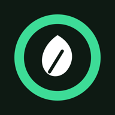

Nourio Privacy Policy
Effective Date: November 1, 2026 · Author: NNRZONE (@Niranga)
Summary
Nourio keeps your food log, profile and settings on your phone, and it has no accounts or analytics. It shows ads from Google AdMob, which are chosen without any of your food, health or profile data, unless you subscribe to Nourio Premium through Google Play. If the app crashes, a crash report (with nothing from your log) goes to Google Firebase Crashlytics, which you can turn off. The app is run by NNRZONE ("we"). It sends data off your phone only for features you use: meal analysis, the AI coach and Nourio Assistant (the AI service you choose, using your own API key), recipe links you share (fetched from that website), food lookups and product searches (USDA FoodData Central and Open Food Facts), optional backup to your own Google Drive, and a monthly check with your AI service for changed health guidelines (only the guideline values are sent). If you turn them on, it also reads from and writes to Health Connect on your phone.
Data Stored on Your Phone
Your food log and settings are stored only in the app's private storage on your phone, and we cannot see them. This includes:
- Meals, with their foods, amounts, nutrition values and times
- Photos you take of meals: the full photo only until it has been analysed, then a small thumbnail kept with the meal
- Your profile photo, if you add one (cropped small, and left out of Android's phone backup)
- Profile details you enter: name, year of birth, sex, height and weight
- Goals, water intake, weight entries (including any imported from Health Connect), and favorite foods and meals
- Blood pressure and glucose readings you log, and nights of sleep you log by hand (bedtime and wake time)
- Diet and allergy choices, and foods whose nutrition match you corrected
- Your AI service's API key, encrypted with a key held in Android's secure key store
- Cached nutrition lookups, your Health Connect choices, and a list of the record IDs the app has synced with Health Connect
- Your latest Insights tips, which tips you accepted or dismissed, and your sleep goal
- The profile you picked (such as "Get fit"), the dates until which features you unlocked with a video stay on, and whether your Nourio Premium subscription is active
Data Sent Off Your Phone
These services receive data, and only when you use the feature that needs them:
| Service | What is sent | Why | When |
|---|---|---|---|
| Your chosen AI service: Google Gemini (default), Groq, Anthropic Claude, OpenAI ChatGPT, xAI Grok, DeepSeek, Moonshot Kimi, Mistral, Alibaba Qwen or OpenRouter | A resized photo of your meal; a meal you type or speak; text you share to the app; the recipe text read from a page you share; for the AI coach, a text summary of one day | Identify foods and estimate portions; write the coach summary | When you analyze a photo, describe a meal, share a photo, text or link to Nourio, or tap Get summary |
| Recipe websites | A normal page request for the link you share | Read the recipe's ingredients and servings | When you share a web link to Nourio |
| USDA FoodData Central | Food names, as search text | Look up nutrition values | When a meal is analyzed or you search for a food |
| Open Food Facts | The barcode number you scan, or the product name you search for | Look up a packaged product | When you scan a barcode or tap Search on the Packaged tab |
| Google Sign-in & Drive | Your Google authorization, and a backup file with your meals, profile, goals and plan, weight entries, water, favorites, diet and allergy choices, settings, and match corrections | Optional backup and restore | Only after you tap Connect on Google Drive |
| Google AdMob (ads) | Device and app information, your IP address, and your phone's advertising ID where you allow it; your consent choices where the law requires them. Nothing from your food log, profile, goals or Health Connect. | Show banner ads and reward videos, measure them, and prevent fraud | When a screen with a banner is open, and when you choose to watch a video to unlock a feature |
| Google Firebase Crashlytics (crash reports) | What went wrong (the error and where in the app's code it happened), phone model, Android and app version, and a random installation ID. Nothing from your food log, profile, goals or Health Connect. | Find and fix crashes | When the app crashes or a background task fails, unless you turn crash reports off |
| Google Play (Nourio Premium) | Your request to subscribe; the app then reads from Google Play whether your subscription is active | Sell and check the subscription | When you open Nourio Premium, subscribe, or start the app as a subscriber |
These services also see your IP address, as any website does. Requests to your AI service are made directly from your phone with the API key you add, so that company handles them under the terms that apply to your key. Requests to USDA use the app's own key, and requests to Open Food Facts need no key. None of them go through a server of ours. Barcode scanning runs on your phone, and the camera image is not uploaded for it. If you speak a meal description, Android's speech recognition service turns it into text under its own privacy terms, and the app receives only that text.
Health Connect Data
Nourio uses Health Connect only for the parts you turn on and allow, and it uses the data only on your phone to show it to you.
| Access | Data | How it is used |
|---|---|---|
| Read (Health Connect switch) | Steps, active calories burned, total calories burned | Show your activity and estimate calories burned and your energy balance |
| Read (Read sleep, heart rate, workouts, weight) | Sleep sessions (including sleep stages), heart rate, exercise sessions, weight. If you also allow them: blood pressure, distance, height | Show sleep, heart rate, workouts and distance on the Burned page. Distance makes the calories-burned estimate more accurate. Weights from other apps and smart scales are added to your weigh-ins and update your profile weight. Height fills your profile only if you have not entered one. Sleep, heart rate, blood pressure and steps are also compared with your food log on the Insights page (see below). |
| Write (Share meals, water, weight) | Nutrition (each meal's name, calories and nutrients), hydration (daily water total), weight | Make your log available to other health apps you choose. Edits and deletions in Nourio are copied to Health Connect. |
Sleep, heart rate, workout and distance data is read when you open the Burned page or calculate calories burned, and is not stored by the app. Health Connect data is not sent to Gemini or any other service, is not shared with third parties, and is not used for advertising. The one exception is a health summary PDF you make yourself (Settings, then Data & privacy): it includes your average steps, calories burned and sleep for the last 30 days, and goes only where you save or send it. Steps, calories, sleep, heart rate, workouts and distance are not included in your Google Drive backup. A weight imported from Health Connect becomes one of your weigh-ins, and an imported height becomes part of your profile. If you turn on Google Drive backup, they are saved in your own Drive with your other weigh-ins and profile.
You can turn off each part at any time in the app (Settings, then AI & connections) or remove the app's permissions in Health Connect settings. After you turn reading off, the app stops reading and hides this data. Weigh-ins already imported stay until you delete them. After you turn writing off, the app stops writing, and records it already wrote stay in Health Connect until you delete them there.
Insights, Patterns and Daily Tips
The Insights page compares your last 60 days of meals, water, weigh-ins, steps, sleep, heart rate and blood pressure to find patterns (for example, whether you eat more after short nights) and suggests tips. This analysis runs entirely on your phone. None of this data is sent to Gemini, to us or to anyone else.
If you allow notifications, the app shows one tip a day. Accepting a tip changes the matching goal in the app (such as your sodium limit or step goal), and you can change it back at any time in Goals & target. You can turn daily tips off on the Insights page. Patterns show what tends to happen together in your data, not proof that one thing causes another, and tips are general wellness guidance, not medical advice.
AI Features and Your AI Service
You choose one AI service under Settings, then AI & connections, and add your own API key for it. Requests go straight from your phone to that company; Nourio has no server in between. Only one service is used at a time, and switching to another turns off every AI consent so each feature asks again before sending anything to the new company. If you choose OpenRouter, it passes requests on to the company behind the model you pick. Each request contains only what is listed here:
- Photo analysis: a resized JPEG of the meal and fixed instructions. It includes no name, profile or health data.
- Text analysis: the meal you type or speak, or the text you share to the app, and fixed instructions. For a shared link, this is the recipe text read from that page (at most about 6,000 characters).
- AI coach: the selected day's foods, amounts and totals; your daily maximums if you set them; water intake; an estimate of calories burned that your phone calculates from your profile; and your diet and allergy choices.
- Nourio Assistant: the question you type, your earlier questions in the same chat with the plans your AI service wrote for them, today's date, and a fixed list of the kinds of data the app keeps (for example "protein per day" or "hours asleep"). Your AI service replies with a plan: which records to look at, over which dates, and how to add them up, plus a sentence with blanks. Your phone runs that plan on your own data and fills in the blanks. None of your meals, weigh-ins, Health Connect data, goals or results are sent, and the answers are not sent back to your AI service. You can also ask the assistant to delete data, withdraw a consent, or report a bug, a feature idea or a problem with your data. Your AI service only suggests the action; the app shows exactly what will happen, and nothing changes until you confirm it on your phone. A report opens your own email app addressed to us, with the text for you to edit; it is sent only if you press send there, and it contains your logged data only if you add it yourself. You can choose to include the app version and phone model.
- Guideline updates: once a month, the health guideline values the app uses (such as the 2,300 mg sodium limit) and the guideline each comes from. With Gemini or Claude, the AI service may search the web to check official sources. Nothing about you is sent. Any change it reports is shown to you with the current and the new value and its source, and nothing changes unless you approve it.
- Never sent: your name, year of birth, sex, height, weight, Health Connect data, or your Google account.
Each of these five features (meal photo analysis, meal descriptions, the AI coach, Nourio Assistant and guideline updates) asks for your consent before it first sends anything, and tells you exactly what it sends. When it asks, you can choose "Always allow" to give consent for all five at once, so you aren't asked again. You can turn each one, or "Always allow AI features", on or off at any time under Settings, then Data & privacy, in "AI and your data"; while one is off, it sends nothing. Photos queued while offline are only analyzed if meal photo analysis is on. If analyzing a meal photo or description takes longer than 30 seconds, the app finishes it in the background and adds the meal to your log; it is sent only while the matching consent is on, and you can edit or delete the meal afterwards like any other. Saved summaries and the assistant's answers stay on your phone. Gemini features need your own Gemini API key, which you add under Settings, then AI & connections. Requests go to Google under the terms of your key. On the free tier, Google may use requests and responses to improve its products, and human reviewers may read them. Photograph only food, and share only text you are comfortable sending. Without a key, the Gemini features stay off.
AI summaries and portion estimates can be wrong.
Ads, Nourio Premium and Unlocking Features
Nourio is free and is paid for by ads from Google AdMob. Small banners appear at the bottom of the Profile tab, History, Insights and calorie budget pages, and at the end of the Home screen. There are no ads on the camera, barcode scanner, meal review, setup guide or settings screens.
The profile you pick (Lose weight, Get fit, Eat healthier or Keep it simple) keeps its features free. Any other feature can be unlocked for 7 days by choosing to watch a short video ad. If no video is available, the feature is unlocked until the next day instead. Reminders are always free. Your profile and unlock dates are stored only on your phone.
Nourio Premium is an optional monthly or yearly subscription, sold through Google Play, that removes all ads and unlocks every feature. Google Play handles the payment: Nourio never sees your card or payment details, and learns from Google Play only whether your subscription is active. The subscription renews until you cancel it in Google Play (Payments and subscriptions), and you can manage it from Settings, then Nourio Premium.
Google chooses the ads, and may use your phone's advertising ID and general device information for this, as described in how Google uses information in ads. Nourio never gives Google, or any advertiser, your meals, weight, goals, diet or allergy choices, or any Health Connect data, and none of it is used to choose ads. In the European Economic Area, the UK and Switzerland, Google's consent message asks whether ads may be personalised before any ad is requested, and you can change your answer at any time under Settings, then Data & privacy, in "Ad privacy choices". Ads are limited to content rated suitable for general audiences.
Crash Reports
If the app crashes, a crash report is sent to Google Firebase Crashlytics so the problem can be fixed. It contains what went wrong and where in the app's code it happened, your phone model, Android and app version, and a random installation ID that is not linked to you. It contains nothing from your food log, profile, goals, diet or Health Connect. When the app reports a problem it recovered from, only the type of error and where it happened are sent, never its message. You can turn crash reports off at any time under Settings, then Data & privacy, in "Send crash reports". Google keeps crash reports for 90 days.
What We Do Not Do
We do not sell your data, and we do not use your food, health or profile data for advertising.
- No accounts: you do not sign up with us, and we run no server that stores your data.
- No analytics code in the app. The only advertising code is Google AdMob, and the only crash reporting is Google Firebase Crashlytics, both described above.
Storage, Security and Retention
Your data stays on your phone until you delete it, and we keep no copy. The app sends requests over HTTPS, and its data sits in private app storage that other apps cannot read on a normal, unrooted phone.
If you use Google Drive backup, the backup file stays in your Google Drive until you delete it. If you use Save file under Settings, then AI & connections, the app writes a backup file, with the same contents as the Drive backup, to the place you pick (for example your phone, Google Drive or Dropbox). That file is encrypted with a password you choose, it is handled by the storage service you chose, and it stays there until you delete it. If Android's own device backup is turned on, Google may also include this app's data in your phone backup, except your AI service keys, your profile photo, and the values the app derives from Health Connect (today's steps and calories, workout notes, sync records and Insights tips), which are always left out. Records the app writes to Health Connect are kept by Health Connect under its own settings until you delete them there.
Your Choices and Deleting Your Data
You control your data in the app, and you can delete all of it yourself:
- Delete entries: remove meals, weight entries and favorites inside the app.
- Export: Settings, then Data & privacy, saves your meals, daily totals and weights as CSV files to a place you choose, and makes a 30-day health summary PDF (nutrition, weight trend, and steps, burn and sleep from Health Connect) that you can save or share, for example by email to your doctor. The PDF is made on your phone; Nourio does not send it anywhere itself, and a shared copy is handled by the app you pick.
- Health Connect: turn off reading or writing under Settings, then AI & connections, or remove permissions in Health Connect settings. To delete records Nourio wrote, use Health Connect's data settings.
- AI service key: remove it under Settings, then AI & connections. You can also delete the key in your AI service's account (for Gemini, in Google AI Studio).
- Google Drive: disconnect under Settings, then AI & connections. This stops backups but leaves your Drive copy. To delete it, open Google Drive on the web, go to Settings, then Manage apps, and delete this app's hidden data. You can also remove the app's access in your Google Account settings.
- Avoid sending data to your AI service: log with barcode scan, manual entry, packaged search or favorites instead of photos, descriptions or sharing, and do not use the AI coach.
- Ads: change your consent under Settings, then Data & privacy, in "Ad privacy choices" (where the law requires it). To stop personalised ads in any app, delete or reset your advertising ID in Android's settings (Privacy, then Ads, or Google, then Ads).
- Crash reports: turn off "Send crash reports" under Settings, then Data & privacy.
- Nourio Premium: cancel in Google Play (Payments and subscriptions), or from Settings, then Nourio Premium, then Manage subscription.
- Delete everything on your phone: clear the app's storage in Android settings, or uninstall the app.
Children
Nourio is not meant for anyone under 18, and we do not knowingly collect data from children. It is not designed for children, and its ads are not directed at them. The app turns off calorie-burn and balance estimates for profiles under 18.
Not Medical Advice
Nourio gives general estimates, not medical advice. Calories burned, balance, weight forecasts and AI summaries are estimates and can be wrong. Allergen and diet warnings are best effort: photos cannot show hidden ingredients, so read labels if you have an allergy. Talk to a doctor or dietitian about health, weight or allergy decisions.
Changes to This Policy
We will post any change on this page and update the date at the top.